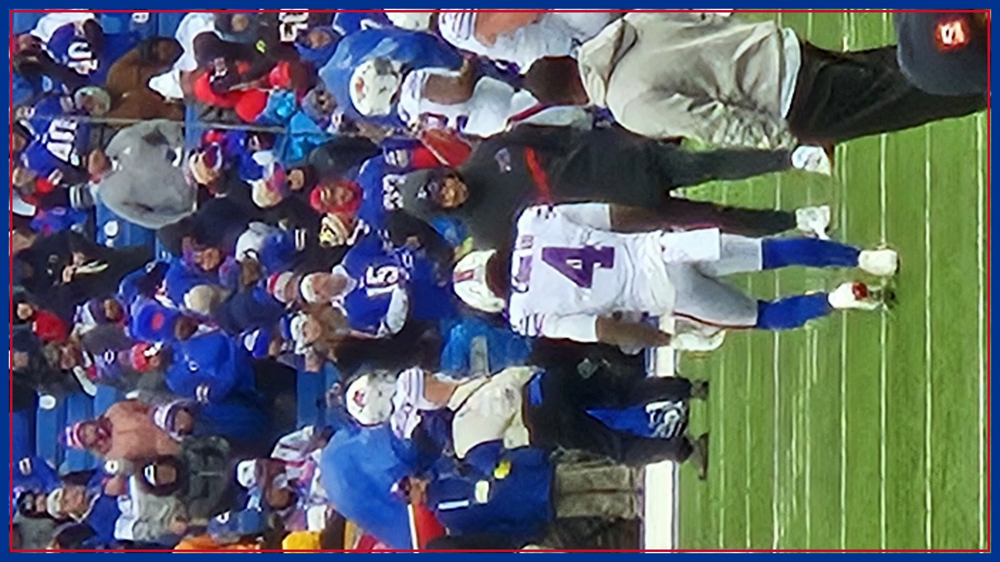

Nine yards for Allen, 34 for Cook: both Bills can pass 5,000 rushing yards tonight
Per the Bills' PR team, Josh Allen enters Monday night with 4,991 career rushing yards and James Cook with 4,966 — nine and thirty-four yards from both passing 5,000 on the same night, in Minnesota, where Cook's brother Dalvin starred and Adrian Peterson enters the Ring of Honor at halftime.

Some milestones arrive one at a time, with a pause in the game and a ball handed to the equipment staff. Monday night in Minneapolis could deliver two of them in the same backfield, possibly in the same quarter. According to the Buffalo Bills' PR team, Josh Allen enters tonight's game at Minnesota (8:15 PM ET, ESPN/ABC) with 4,991 career rushing yards — nine yards short of 5,000. James Cook enters with 4,966 — thirty-four yards short of the exact same number, per the same Bills PR figures reported by Buffalowdown. A quarterback and his running back, crossing one of football's roundest numbers on the same night, in the same game, for the same team. Football almost never lines history up this neatly.
Start with Allen, because his version of 5,000 is the rarer one. If he gets his nine yards tonight — and against a Brian Flores defense that blitzes on roughly seven of every ten snaps, one scramble could do it — Allen will join Lamar Jackson, Michael Vick, Cam Newton and Russell Wilson as the only quarterbacks in NFL history with 5,000 career rushing yards, per Buffalowdown. That is the whole list. And Allen would arrive there in the middle of a season that is already bending record books: per NFL Research via the Vikings' official game preview, he is the first player in history with at least eight passing touchdowns (he has 11) and at least eight rushing touchdowns (he has nine) in his team's first seven games of a season. A week after he passed Jim Kelly's franchise touchdown-pass mark with Kelly in the building, Allen gets to join a five-man club that has no other active path in except Jackson. Nine yards. That is all that is standing between him and it.
Cook's 5,000 carries a different weight, because of where it would happen. Cook is the reigning NFL rushing champion, and he arrives in Minnesota with 707 rushing yards through seven games at 5.1 yards a carry and 101.0 rushing yards per game, per the Vikings' official preview — one of only three backs in football averaging over 100 a game. But U.S. Bank Stadium is not just another road dome for the Cook family. James is the younger brother of Dalvin Cook, who ran for four consecutive 1,000-yard seasons in this building for Minnesota from 2019 to 2022 after the Vikings drafted him to be Adrian Peterson's successor, per the same Vikings preview. And tonight, at halftime, Peterson himself will be inducted into the Vikings Ring of Honor as its 29th member, per DAZN's preview. The running back lineage of that stadium will be honored at halftime. The younger brother of the man who inherited it needs 34 yards to reach 5,000 of his own — in the other uniform, on the other sideline, in front of all of them.
The beautiful part for Buffalo is that chasing these numbers is not a distraction from the game plan — it IS the game plan. This site has spent all week on the central tension of tonight: Buffalo's No. 1 offense against Minnesota's No. 1 defense, and a Flores blitz machine that owns the league's best pressure and sack rates. The soft spot in that defense, all season, has been the ground. Minnesota is allowing 116 rushing yards per game, per ESPN figures cited by Buffalowdown, and 4.5 yards per carry — the number this site's Card desk flagged Saturday as the tax on Flores' aggression. Every Cook carry that stays ahead of the chains is a blitz that never gets called. Every Allen scramble that punishes a blitz is a defensive coordinator thinking twice about the next one. If Buffalo runs the ball the way it needs to run it to win this game, both milestones fall as a side effect of doing the right thing.
There is also a standings gift waiting if Buffalo finishes the job. Sunday was kind to the Bills without them taking a snap: all three other AFC East teams lost, per Buffalowdown, including New England's 45-27 loss to Green Bay in Foxborough, in which Drake Maye threw three interceptions as the Patriots committed four turnovers and never pulled within one score after the second quarter. The Patriots fell to 5-4. A Buffalo win tonight moves the Bills to 7-1, stretches the division lead, and turns New England's one win over Buffalo — that 29-26 Week 4 game — into an increasingly lonely argument. Milestones are the headline. Separation is the prize.
Two honest caveats before anyone engraves anything. First, the milestones are career regular-season rushing totals as the Bills' PR team counts them, and both men still have to actually gain the yards against the best defense in football — 34 yards for Cook is a good quarter's work most weeks, but this is not most weeks. Second, Buffalo's left side remains the game's biggest unknown: left tackle Dion Dawkins (rib) and left guard Alec Anderson (ankle) are both questionable after Dawkins missed the entire practice week, and tonight's inactives, about 90 minutes before kickoff, are the last word on who is blocking for the two men chasing history. If the backups start, the milestone watch gets harder and the survival watch gets louder — the same story this site has told since Thursday.
But sit with the shape of this night for a second, because Bills fans have earned the right to enjoy a setup like this. Six-and-one at six-and-one. The No. 1 offense against the No. 1 defense. A rematch of the 2022 classic. Peterson going into the Ring of Honor at halftime, a Cook in the visiting backfield 34 yards from 5,000, and a quarterback nine yards from a club that only four men have ever joined. History usually makes you wait. Tonight it has an appointment — 8:15 PM ET, in a loud dome, with two Bills racing each other to the same round number. Get there first, fellas. Go Bills — and get the full Monday night fallout in your inbox tomorrow morning with The BNC Blitz.
The BNC Blitz is free: the day's Bills news, one stat that matters, and one take, every morning. Join to keep reading — and never miss the end of a story again.